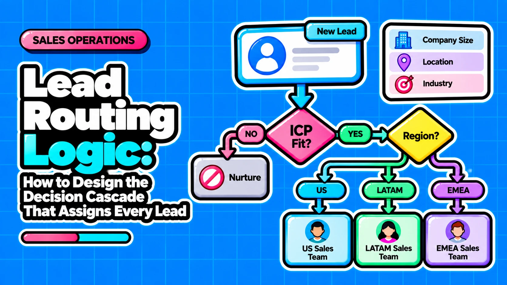

Lead Routing Logic: How to Design the Decision Cascade That Assigns Every Lead

Direct answer: Lead routing is an ordered decision cascade that decides who owns a lead, and it should end in a measurable first-contact event, not an owner field update. Design it as nine checks in a fixed order and build the failure path (fallback owner and SLA timeout) before the rotation. Routing fails more often on bad data and unhandled edge cases than on the choice between round robin and territory.
- Order decides routing quality: eligibility, dedup, account match and existing ownership must run before territory and rotation, or strategic accounts get misrouted.
- Build failure paths first: a fallback owner and an SLA reroute catch every lead the happy path misses.
- Data comes first: rules can only act on fields they can read, so blank fields and duplicate accounts undermine any distribution method.
- Scoring emits, routing consumes: a priority lane value keeps the two systems coupled but separable.
- Log every assignment reason: a decision log makes fallback rate, reassignments and SLA adherence measurable.
Questions this article answers
- What does lead routing decide, and what does it leave to scoring?
- Which data must be fixed before you write routing rules?
- What order should the lead routing decision cascade run in?
- Which distribution method fits your sales motion?
- What does the speed-to-lead evidence actually show?
- What are the native routing limits in Salesforce and HubSpot, and when do you need a dedicated tool?
- How does lead routing fail silently, and how do you test it?
- What should you do next?
- Plus 4 FAQs answered below
What does lead routing decide, and what does it leave to scoring?
Routing decides who owns a lead and how fast it is worked; scoring decides how good the lead is, and a priority lane value connects them.
Routing is the ownership decision: it assigns an owner, applies availability checks and starts the response clock. Scoring is the qualification decision: it rates fit or intent and outputs a priority. Modern setups chain enrichment, lead-to-account matching, scoring, routing logic and availability checks (Digital Applied). We recommend that scoring emit a single lane value that routing reads at step 6, so either side can change without rewriting the other.
| System | Question it answers | Output |
|---|---|---|
| Scoring | How good is this lead? | Priority or lane value |
| Routing | Who owns it, and how fast is it worked? | Owner, reason code, first-contact event |
Which data must be fixed before you write routing rules?
Fix data first: confirm domain, country, segment, owner and account hierarchy fields are populated and reliable, and clean duplicate accounts, before building rules.
ZoomInfo argues that blank or stale firmographic, territory and hierarchy fields cause misroutes more than the assignment rules do. We agree with the direction, because a rule can only act on values it can read. Duplicates compound this: a lead can match the wrong duplicate account and route to the wrong rep (Daeda Tech). Lead-to-account (L2A) matching needs filters, which can exclude inactive accounts, and tie-breakers, which pick among candidates (LeanData). LeanData notes that Salesforce does not match leads to accounts natively, so teams typically build Apex or Flow that stores the matched Account ID on the lead before rules run.
Consider a hypothetical lead from a prospect domain that appears on two account records: an active one with an owner and an inactive duplicate with none. Without dedup or an inactive-account filter, matching can pick the empty record, the lead looks unowned and drops into rotation, and the account owner never sees it.
Pre-flight checklist, with the cascade step each field feeds:
☐ Email domain and company name: step 3 (L2A match); if blank, the lead skips matching and takes the new-business path.
☐ Duplicate accounts cleaned by domain: steps 2 and 3; if left, matching picks the wrong record.
☐ Account owner and owner active status: step 4; if blank or inactive, the lead falls through to the pool.
☐ Country and segment: step 5 (pool selection); if blank, the lead lands in the fallback.
☐ Account hierarchy parent: step 4, for parent or regional-child routing; if blank, routing treats the account as standalone.
☐ Rep availability flag: steps 5 and 7; if stale, reps are skipped or wrongly included.
What order should the lead routing decision cascade run in?
Run nine checks in order: eligibility, dedup, L2A match, existing owner, pool selection, priority lane, distribution, fallback and SLA reroute, with the failure path designed first.
This is our recommended design, a synthesis of published orders, not an industry standard. Sources agree on the core: existing ownership before territory before round robin (Selling Signals, LeadAngel). Sources differ on whether territory or segment comes first and where priority sits relative to pool selection, so both are design choices. Write a log entry (rule matched, reason code, timestamp) at every step.
- Filter ineligible records. Suppress spam, test and disqualified leads. Junk otherwise consumes rotation turns. In: status, source flags. Out: eligible or suppressed. Null: treat as eligible.
- Deduplicate leads and accounts. Link or merge duplicates before matching. Matching a duplicate routes to the wrong rep. In: email, domain. Out: canonical record. Null: continue, flag for review.
- Match lead to account. Apply filters and tie-breakers to find the account. Round robin is per lead, so unmatched contacts bypass account owners. In: domain, company name. Out: matched Account ID. Null: new-business path.
- Honour existing owner. Send matched leads to the account or opportunity owner. Ownership outranks geography and rotation. In: owner, active status. Out: assigned owner. Null or inactive: continue.
- Select eligible rep pool. Apply territory and segment to list reps who can take the lead. Distribution needs valid candidates. In: country, segment, availability. Out: rep pool. Null: empty pool goes to step 8.
- Apply priority lane. Read the lane value from scoring and fast-track high-priority leads to named users. Scoring stays outside routing, and fast-tracking is a practitioner recommendation, not tested evidence. In: lane value. Out: standard or fast-track queue. Null: standard lane.
- Distribute the lead. Assign using your chosen method. Rotation belongs only here. In: pool, method data. Out: owner, reason code. Null: no valid rep goes to step 8.
- Catch unrouted leads. Assign leftovers to a named fallback owner or queue. Leads otherwise sit unnoticed. In: unowned leads. Out: fallback owner. Null: never null; the fallback must always exist.
- Reroute on SLA timeout. Reassign leads with no first-contact event inside the acknowledgement window. An owner update is not contact. In: assign time, contact event. Out: new owner, log entry. Null: no event means timeout.
Build order: build steps 8 and 9 first. A fallback owner and a timeout must exist before any rotation goes live, because a rotation with no valid rep leaves leads unnoticed (Daeda Tech).
Which distribution method fits your sales motion?
Match the method to your motion: round robin for interchangeable reps, weighted for uneven capacity, territory for specialisation, account-based for enterprise deals.
Distribution is step 7 only. Round robin ignores rep expertise, territory alignment and lead value (ZoomInfo, LeadAngel), so it works as a last-step mechanism after steps 1 to 6 have narrowed the pool, not as a strategy. The better test is maintenance cost: every method needs data someone must keep current.
| Method | Best fit | Main limitation | Data required |
|---|---|---|---|
| Round robin | Even teams, high volume, interchangeable reps | Ignores expertise, territory and lead value | Active rep list |
| Weighted or capacity-based | Uneven bandwidth or ramping reps | Needs ongoing capacity data | Capacity or performance per rep |
| Territory | Geographic or vertical specialisation | Weak with remote teams | Country, region, industry fields |
| Account-based or buying group | Enterprise multi-stakeholder deals | Depends on accurate account matching | Matched account, hierarchy, owner |
Fairness and speed trade off. HBR authors listed lead-distribution rules based on geography and "fairness" among the causes of slow response. We recommend choosing the method that gets an available, qualified rep to first contact fastest, and treating fairness as a tie-breaker inside the pool.
What does the speed-to-lead evidence actually show?
HBR 2011 shows that fast response matters: firms that tried to contact a web lead within an hour were nearly 7x as likely to have a meaningful conversation with a key decision-maker than slower responders.
HBR audited 2,241 US companies with a test web lead. Only 37% responded within an hour, 24% took over 24 hours and 23% never responded; average response among responders was 42 hours. These figures measure contact odds in a US test, not revenue outcomes. The widely quoted "5-minute rule" (100x contact, 21x qualification) comes from a 2007 InsideSales.com/MIT study, not HBR, though the two share an author and are often conflated (Expertise.ai). We could not retrieve the 2007 primary PDF, so that attribution rests on secondary sources.
The design implication: add routing complexity only if it does not delay first contact. Speed to lead is not speed to conversation, so measure the first-contact event, not the assignment timestamp.
What are the native routing limits in Salesforce and HubSpot, and when do you need a dedicated tool?
Salesforce assignment rules are first-match, allow one active rule and, per practitioners, run once on create; HubSpot rotation is action-scoped and not capacity-aware.
Salesforce lead assignment rules are ordered entries: the first match assigns and evaluation stops, unmatched leads go to a default owner, and an org can have only one active rule. One practitioner reports that API or middleware-created leads skip the rules unless the auto-assign header is set, and that re-routing on change needs a record-triggered Flow. All of these are time-sensitive product behaviours, so verify them against current vendor docs before building.
| Platform | Behaviour | Limit | Cascade step affected |
|---|---|---|---|
| Salesforce assignment rules | First match assigns; default owner otherwise | One active rule per org | Steps 5, 7, 8 |
| Salesforce (practitioner-reported) | Runs once on create; API leads need auto-assign header | Re-routing needs record-triggered Flow | Step 9 |
| Salesforce L2A | No native matching; Apex or Flow stores Account ID | Rules need the Account ID first | Steps 3, 4 |
| HubSpot rotate action | Needs active users with paid Sales or Service Hub seats | May not work if the owner property syncs with Salesforce | Step 7 |
| HubSpot rotation count | Picks lowest per-action count | Owner list change resets count; not workload-aware | Step 7 |
| HubSpot ownership | Existing owners kept unless overwrite option is on | Specialist rules must run before rotation | Step 4 |
HubSpot's seat and sync details come from its knowledge base. Dedicated routing tools such as LeanData exist for what these platforms lack. We recommend considering one when the cascade needs:
- Lead-to-account matching with filters and tie-breakers
- Account hierarchy routing to a parent or regional child owner
- Capacity-aware distribution rather than turn-based rotation
- Reason codes and audit logs without custom builds
How does lead routing fail silently, and how do you test it?
Routing fails silently through skipped rules, rotation resets, inactive owners, duplicates and overly broad entries, so log a reason for every assignment and test every rule path with seeded leads.
The decision log from the cascade (rule matched, reason code, timestamp) is what makes failure visible. One source suggests tracking fallback-route hit rate, manual reassignment rate and SLA adherence by lead source, and calls a fallback rate above roughly 10% a sign of gaps in primary rules; that is one source's heuristic, not a validated benchmark. Test before activation: seed leads for each entry plus fall-through cases, duplicates and existing-owner conflicts, because failures are otherwise silent (Daeda Tech).
Failure modes (symptom, cause, check):
☐ API or integration leads keep no new owner: rules not triggered (DEV Community); check the auto-assign header or Flow.
☐ Rotation suddenly favours one rep: owner list changed and the count reset (source); check the action's edit history.
☐ Leads sit with a departed user: owner status never validated; check active status at steps 4 and 5.
☐ Contacts at known accounts go to random reps: a duplicate account was matched; check dedup at step 2.
☐ Many leads land in the catch-all: entries are broad or overlapping; check entry order.
Seeded test-lead matrix:
| Test lead type | Expected path | Expected owner and reason code |
|---|---|---|
| Spam or test record | Step 1 | Suppressed, INELIGIBLE |
| Duplicate-domain prospect | Steps 2 and 3 | Canonical account owner, MATCHED |
| New contact, existing customer | Step 4 | Account owner, EXISTING_OWNER |
| Outside every territory | Steps 5 and 8 | Fallback owner, FALLBACK |
| Unworked past the window | Step 9 | Next available rep, SLA_REROUTE |
What should you do next?
Audit your data fields, write the cascade spec, and seed test leads before activating any routing change.
The order of checks, the failure path designed first, a decision log at every step and a lane value separating scoring from routing are the non-negotiables. Territory-versus-segment order and distribution method are design choices to document and test. For each of the nine steps, write input, output and on-null handling, then confirm your platform can execute each step natively.
☐ Audit the data fields in the pre-flight checklist and fix blanks and duplicate accounts.
☐ Write the nine-step cascade spec with fallback owner and SLA timeout defined first.
☐ Seed test leads for every rule path and fall-through case, and check the logged reason codes.
If you want help redesigning the cascade, the scoring interface and lifecycle stages together, that is the scope of Muvap's Lifecycle, Scoring & Routing Redesign service.
Frequently asked questions
Should territory or segment be evaluated first?
Sources differ, so it is a design choice, not a standard. One published hierarchy puts territory before segment, while other sources order them differently (LeadAngel, Selling Signals). We recommend picking the order that matches how ownership is defined in your organisation, documenting the reason, and testing leads that fall into both territory and segment overlaps before activation.
Is round robin enough as a routing strategy?
No. Round robin is a last-step distribution mechanism. It fits small teams with similar lead quality and rep capacity, but it ignores account ownership, rep expertise, territory and capacity (LeadAngel). Because it assigns per lead, a new contact at a strategic account can bypass the account owner unless matching runs upstream.
Does the 5-minute rule come from Harvard Business Review?
No. The 100x contact and 21x qualification figures for 5 versus 30 minutes come from the 2007 InsideSales.com/MIT Lead Response Management Study. HBR 2011 reports different figures, such as nearly 7x the odds of a meaningful decision-maker conversation for contact within an hour. We could not retrieve the 2007 primary PDF, so that attribution rests on secondary sources.
Do Salesforce assignment rules re-route a lead when it changes?
Per practitioner reports, no. Assignment rules run once on create, and leads created through the API or middleware do not trigger them unless the auto-assign header is set. Re-routing on field change needs a record-triggered Flow (DEV Community). This behaviour is time-sensitive, so verify it against current Salesforce documentation.
Sources
- Account-Based Routing in Salesforce: How It Works, LeanData
- Routing: Lead-to-Account Match Node Guide, LeanData Support
- What Is Lead Routing? Strategies, Data, and Best Practices, ZoomInfo Pipeline
- Top 12 Lead Routing Best Practices, LeadAngel
- Round Robin Lead Routing: Rules, Examples & Best Practices, Selling Signals
- What is Lead Routing? The Ultimate Guide, LeadAngel
- Lead Routing & Assignment: The 2026 CRM SLA Framework, Digital Applied
- Set Up Assignment Rules, Salesforce Help
- Lead assignment rules and round-robin distribution in Sales Cloud, DEV Community
- Assign and rotate record owners using workflows, HubSpot Knowledge Base
- HubSpot Round Robin Workflow: Assignment Rules That Hold Up in Production, Daeda Tech
- Lead Rotation HubSpot Guide: Setup and Failure Modes, thatsgonna.help
- The Short Life of Online Sales Leads, Harvard Business Review
- Speed-to-Lead Statistics, Verified, With Folklore Debunked, Expertise.ai
Want to redesign your routing cascade, scoring interface and lifecycle stages together?
Contact →